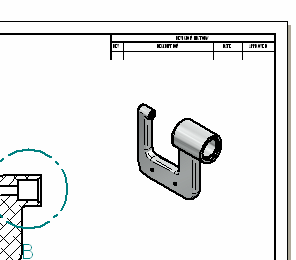
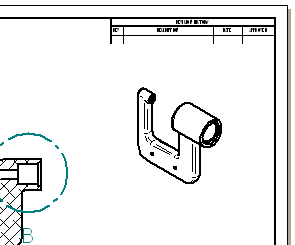
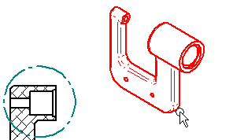
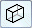
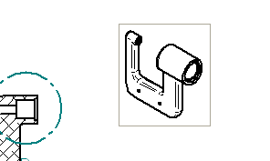

Change drawing view properties

In the next few steps, change the display properties for the isometric drawing view.

Select the Fit  command.
command.
Use the Zoom Area  command to adjust the view area to display the isometric view as shown above.
command to adjust the view area to display the isometric view as shown above.
Ensure that the Home tab→Select group→Select command  is active.
is active.
Select the isometric drawing view.

On the Select command bar, click Shading Options

, and then select Shaded with Edges .Position the cursor in free space and click.
Notice that a gray box displays around the isometric view, and that the display has not updated, as shown below.

Choose Home tab→Drawing Views group→Update Views .
An Update View shortcut menu command is also available to update a single drawing view. This command is useful when working with complex drawings where updating all the drawing views at once could be time consuming.
On the Quick Access toolbar, choose Save  .
.